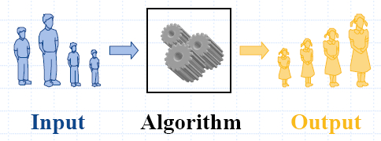

Chapter 3: Analysis Tools
Analysis.pdf

- An algorithmis a step-by-step
procedure for solving a problem in a
finite amount of time.
-
Most algorithms transform input
objects into output objects.
3.1 Running Time and Pseudo-Code
3.1.1 How Should Running Time be Measured?
Experimental Studies
- Write a program implementing the algorithm
- Run the program with inputs of varying size and composition
- Use a function, like the built-in clock() function, to get an
accurate measure of the actual running time
- Plot the results

Limitations of Experiments
- It is necessary to implement the algorithm, which may be difficult
- Results may not be indicative of the running time on other inputs
not included in the experiment.
- In order to compare two algorithms, the same hardware and
software environments must be used
Running Time
- The running time of an algorithm typically grows with the input
size.
- Average case time is often difficult to determine.
- We focus on the worst case running time.
- Easier to analyze
- Crucial to applications such as games, finance and robotics
Theoretical Analysis
- Uses a high-level description of the algorithm instead of an
implementation
- Characterizes running time as a function of the input size, n.
- Takes into account all possible inputs
- Allows us to evaluate the speed of an algorithm independent of
the hardware/software environment
3.1.2 Pseudo-Code
A program code unrelated to the hardware of a particular computer and
requiring conversion to the code used by the computer before the
program can be used. No strict syntax rules, designed for humans, not
for computers.
- High-level description of an algorithm
- More structured than English prose
- Less detailed than a program
- Preferred notation for describing algorithms
- Hides program design issues
Example
Algorithm arrayMax(A, n)
Input: array A of n integers
Output: maximum element of A
currentMax ← A[0]
for i←1 to n−1do
if A[i] >currentMax then
currentMax←A[i]
return currentMax
Pseudocode Details
Control flow
if…then…[else…]
while…do…
repeat…until…
for…do…
Indentation replaces braces
Method declaration
Algorithm method(arg[, arg…])Input…Output…Method/Function
callvar.method (arg[, arg…])
Return valuereturnexpression
Expressions← Assignment (like = in C++)
= Equality testing (like == in C++)
n2 Superscripts and other mathematical formatting allowed
- Basic computations performed by an algorithm
- Identifiable in pseudocode
- Largely independent from the programming language
- Exact definition not important (we will see why later)
- Assumed to take a constant amount of time
Examples:
- Evaluating an expression
- Assigning a value to a variable
- Indexing into an array
- Calling a method
- Returning from a method
3.4 Analysis of Algorithms
3.4.1 Counting Primitive Operations
By inspecting the pseudocode, we can determine the maximum number of
primitive operations executed by an algorithm, as a function of the
input size.
| Algorithm arrayMax(A, n) |
Number of operationas
|
| currentMax←A[0] |
2 |
| for i←1 to n−1do |
2 + n
|
| if A[i] >currentMax then |
2(n − 1) |
| currentMax←A[i] |
2(n − 1) |
| { increment counter i} |
2(n −1) |
return currentMax
|
1
|
|
Total 7n − 1 |
Estimating Running Time
Algorithm arrayMax executes 7n−1
primitive operations in the worst case. Define:
a = Time taken by the fastest
primitive operation
b = Time taken by the slowest
primitive operation
Let T(n) be worst-case time of
arrayMax.Then
a (7n − 1) ≤ T(n)
≤ b(7n − 1)
Hence, the running time T(n) is bounded by two linear
functions
Growth Rate of Running Time
Changing the hardware/ software environment
Affects T(n)by a constant factor, but
Does not alter the growth rate of T(n)
The linear growth rate of the running time T(n)
is an intrinsic property of algorithm arrayMax
3.5 Asymptotic Notation
Big-Oh
Given functions f(n) and g(n),
we say that f(n) is O(g(n)) if there are positive constants c and N
> 0 such that f(n) < c g(n) for n > N.
Example 1: 2n +10 is O(n)
2n +10 ≤ cn; (c − 2) n ≥10; n
≥ 10/(c − 2)
Pick c = 3 and N =
10.
Example 2: the function n2 is not O(n)
n2 ≤ c n;
n ≤ c
The above inequality cannot be satisfied since c must be a constant
Example 3: 7n - 2 is O(n)
need c > 0 and N ≥ 1 such that 7n -
2 ≤ c n for n ≥ N
this is true for c = 7 and N = 1
Example 4: 3n3+ 20n2+ 5 is O(n3)
need c > 0 and N ≥ 1 such that 3n3+ 20n2+ 5 ≤ c n3 for n ≥ N
this is true for c = 4 and N = 21
Example 5:
3 log n + log log n is O(log n)
need c > 0 and N ≥ 1 such that 3 log n + log log n ≤ c log n for n ≥ N
this is true for c = 4 and N = 2
Big-Omega
f(n) is \Omega(g(n))
if there
is a constant c > 0
and an integer constant N
> 0 such that f(n) > c g(n) for n > N.
Big-Theta
f(n) is \Theta(g(n))
if there
are constants c' >
0 and c" > 0 and an
integer constant N
> 0 such that c'g(n)
< f(n) < c" g(n)
for n > N.
little-oh
f(n) is o(g(n)) if, for any
constant c > 0, there is
an integer constant N > 0
such that f(n)
< c g(n)
for n > N.
little-omega
f(n) is \omega(g(n))
if, for
any constant c > 0,
there is an integer constant N
> 0
such that f(n) < c g(n) for n > N.
3.6 Asymptotic Analysis